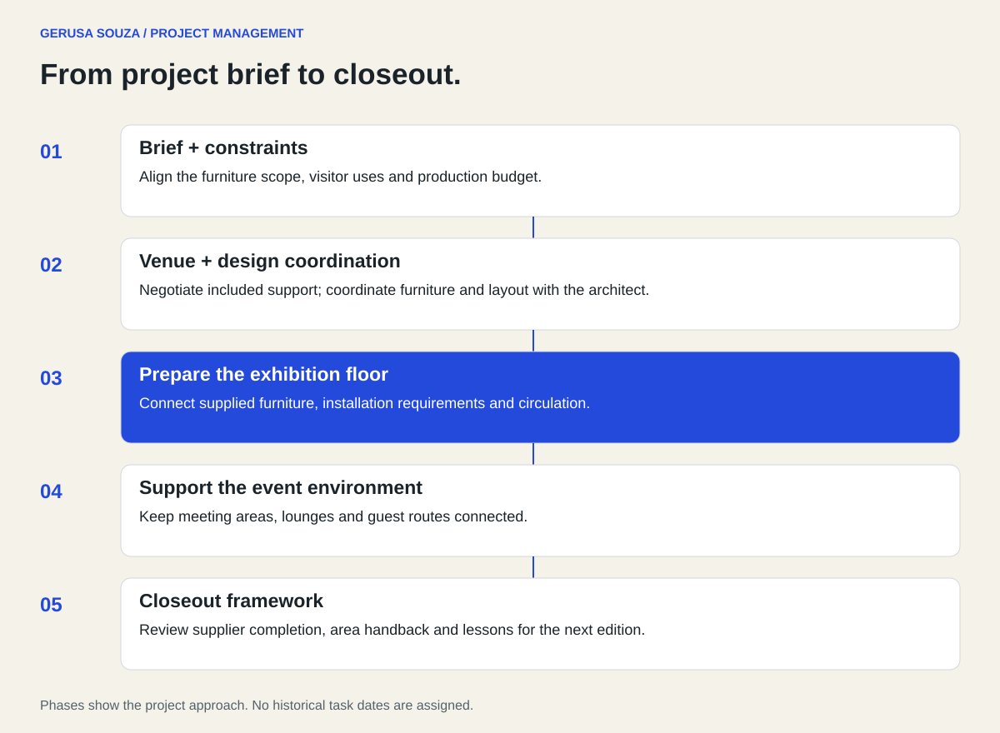

Objective
Support an exhibition environment where buyers, exhibitors and guests move between meetings and hospitality.
BIENAL DO IBIRAPUERA / EXHIBITION PRODUCTION
Furniture design, floor planning and venue coordination under a tight production budget.
Travelweek São Paulo / Project managementSupport an exhibition environment where buyers, exhibitors and guests move between meetings and hospitality.
Furniture design, floor planning with the project architect, and venue coordination.
A tight production budget and several uses sharing the exhibition floor.
I worked with the venue to include security and staff support in the package. I also designed furniture supplied by my company and planned its placement with the project architect across booths, lounges and corridors.
The decision connected budget control, venue scope and the practical needs of the exhibition floor.

Furniture placement supported the meeting areas and shared circulation.
Small lounges, high tables and chairs created places to stop around the floor.
A larger lounge and lunch and dinner areas extended the guest experience.

Public programme reference: Travelweek 2015 at the Bienal. This reference illustrates the event format alongside my exhibition-production work.
| Date | Published programme | Operational relationship |
|---|---|---|
| 5 May 2015 | Opening ceremony and reception | Arrival, welcome and hospitality |
| 6–7 May 2015 | Pre-arranged buyer and exhibitor meetings | Meeting spaces and circulation |
| 8 May 2015 | Meetings and Travelweek White Party | Trade activity and closing-event transitions |
Programme: Portal Eventos, 5 May 2015.
Security and staff support were included through venue coordination.
Furniture design and placement connected my work with the project architect.
Scope negotiation and spatial planning supported the delivery requirements.